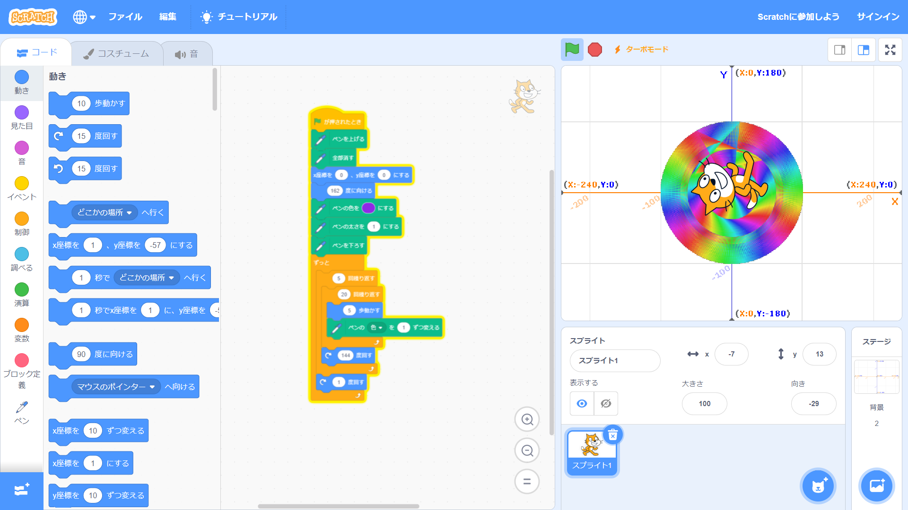
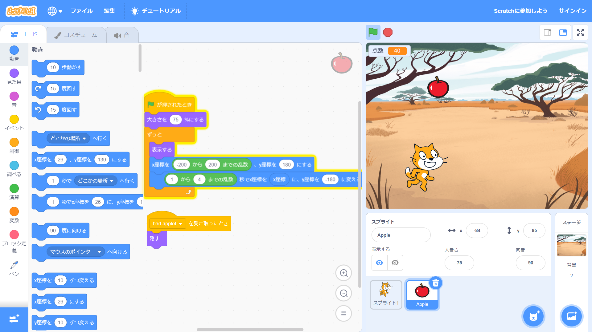

1週目のレポート ： 公大高専１年実習I-1
3a班15番 Ludicolo23
第1週目
1-1 サイエンスアート

1.内容
スクラッチを使って線を書くプログラムを作成した。
［ペンを下す］ブロックを処理した後にスクリプトが動いたらスクリプトの軌道に沿って線が引かれる。
しかし、この線を引く命令は［ペンを上げる］プログラムでしか停止できないようで、
［旗が押されたとき］ブロックの後に［ペンを上げる］ブロックを入れておかなければスクリプトが初期位置に戻る際にも線が引かれてしまうので注意が必要だ。
2.感想
プログラムで線を引く方法が分かった。
scratchでは三角関数なども使えるため、その気になれば複雑な図形の描写も可能であろう。
人の手で複雑な図形を描くことは非常に難しいので代わりに描写してくれるプログラム君は優秀だとわかった。
1-2 ゲーム

1.内容
スクラッチを使ってリンゴをとるゲームのプログラムを作成した。
乱数を用いることでゲームにありがちなランダム要素をプログラムに追加することができる。 また、変数を用いることで任意の値を保存,変更することができる。
2.感想
少なくともスクラッチ上では乱数が無造作に選ばれていると知った。
実際のゲームもランダム要素はこのように無造作に選ばれてほしいものだ。
また、ジャンプのプログラムが想像より難解で驚いた。
1-3 ホームページ作成
私のホームページ
1.内容
GitHubを使ってホームページを作成した。
HTMLというプログラム言語を用いることでホームページが作成できる。
そもそもこのページもHTMLを用いて作成した。 2.感想
ウェブページを作る際に改行ではエンターキーを用いるのではなく"br"を使うというのに違和感を感じた。
編集画面の都合からいえばエンターキーで官業されないのは合点がいくのだが。
また、GitHubは上書きがスローペースなので心を落ち着かせて急ぐことなく編集したいと思った。